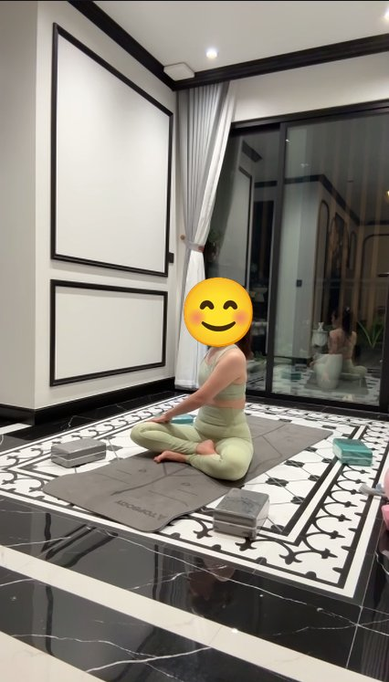
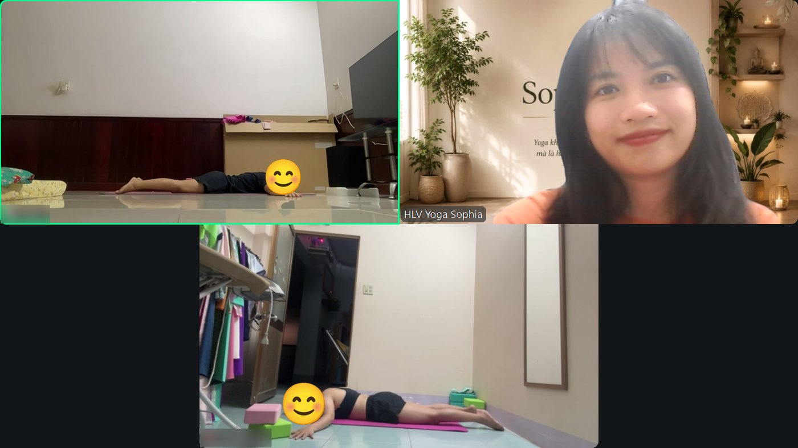
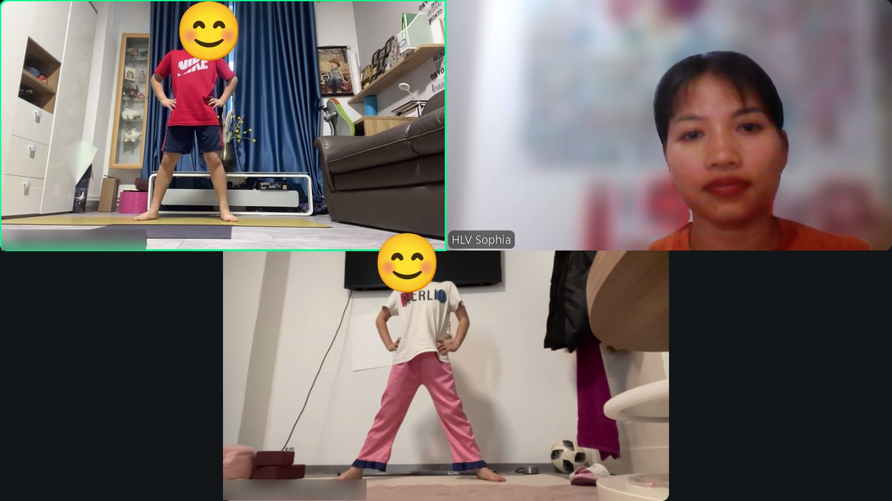

Yoga người lớn · Nỗi lo thời hiện đại
Yoga cho người dính điện thoại, đầu óc quá tải
Định cầm máy lên xem giờ. Hai mươi phút sau vẫn còn lướt. Đầu thì ồn, cổ thì mỏi, mắt thì cay, mà không nhớ nổi mình vừa đọc gì.
Có một buổi lớp Zoom buổi tối, cô dặn cả lớp đặt điện thoại úp xuống, cách thảm một sải tay. Một bạn cười: “Cô ơi, em thấy tay mình cứ ngứa ngứa.”
Cả lớp cười theo. Vì ai cũng thấy y như vậy.
Mười lăm phút đầu, nhiều người còn liếc về phía cái máy. Đến lúc nằm thư giãn cuối buổi thì không ai nhớ đến nó nữa. Một bạn nhắn cô sau buổi tập: “Lâu lắm rồi em mới thấy đầu mình yên như thế.”
Cô nhớ mãi câu đó. Không phải vì bài tập hay. Mà vì cái yên ấy hóa ra lại hiếm đến vậy.
Điện thoại không xấu. Nó giúp mình học, làm việc, gọi cho mẹ ở quê, và cũng là cách để nhiều học viên tập được với Sophia qua Zoom. Điều khiến mình mệt không hẳn là cái máy. Mà là việc tâm trí không còn lúc nào được ở yên một chỗ.
Bài này không khuyên bỏ điện thoại. Sophia muốn cùng nhìn lại một ngày của mình trên cả năm thể: thân, khí, tâm, trí và tinh thần. Có phần cho đôi mắt và cái cổ. Có phần cho hơi thở. Và có một phần cô thấy quan trọng nhất: tập cho tâm biết quay về.

- Chuyện gì đang xảy ra
- Đồng hồ màn hình
- Năm thể
- Thu nhiếp giác quan
- Đôi mắt và cái cổ
- Chuỗi 12 phút
- Một ngày ít màn hình
- Khi nào nên đi khám
Chuyện gì đang xảy ra trong mình
Mỗi lần có thông báo, não được một chút bất ngờ. Có thể là tin vui, có thể là lời khen, có thể là một video vui. Mình không biết trước, nên mình cứ muốn xem tiếp. Dần dần, việc cầm máy lên thành phản xạ, nhanh hơn cả suy nghĩ.
Nhà tâm lý học Gloria Mark theo dõi người làm việc văn phòng gần hai mươi năm. Trong cuốn Attention Span (2023), bà kể rằng thời gian trung bình một người tập trung vào một màn hình trước khi chuyển sang việc khác đã giảm từ khoảng hai phút rưỡi (năm 2004) xuống còn khoảng 47 giây trong những năm gần đây. Và mỗi lần chuyển việc như vậy đều tốn sức.
Chỉ cần nằm trên bàn. Một nhóm nghiên cứu ở Đại học Texas cho gần 800 người làm bài kiểm tra trí nhớ và khả năng tập trung. Ai để điện thoại ở phòng khác làm bài tốt hơn rõ so với ai để điện thoại úp trên bàn, dù máy tắt tiếng và không ai cầm lên (Ward và cộng sự, 2017).
Tâm lang thang thì ít vui hơn. Hai nhà nghiên cứu ở Harvard hỏi hàng nghìn người qua điện thoại, vào những thời điểm ngẫu nhiên trong ngày: “Bạn đang làm gì, đang nghĩ gì, đang thấy thế nào?”. Gần một nửa thời gian (46,9%), tâm trí người ta đang ở chỗ khác. Và lúc tâm lang thang, người ta thường thấy kém vui hơn lúc tâm ở với việc đang làm (Killingsworth và Gilbert, Science 2010).
Rồi đến cơ thể. Đầu người lớn nặng chừng 4,5 đến 5,5 kg. Khi cúi xuống nhìn màn hình, lực đè lên cổ tăng lên theo góc cúi. Một mô hình tính toán của bác sĩ cột sống Kenneth Hansraj (2014) cho thấy ở góc cúi 60 độ, lực lên cổ tương đương khoảng 27 kg. Đây là mô hình ước tính, không phải đo trực tiếp trên người, nhưng nó giải thích vì sao cổ vai gáy của dân văn phòng và học sinh bây giờ hay mỏi đến vậy.
Và đến giấc ngủ. Đọc trên màn hình phát sáng trước khi ngủ làm người ta lâu buồn ngủ hơn, tiết ít melatonin hơn, và sáng hôm sau kém tỉnh táo hơn so với đọc sách giấy (Chang và cộng sự, PNAS 2015). Ngủ ít thì hôm sau càng dễ cầm máy lên “cho đỡ mệt”. Vòng cứ thế quay.
Cô kể những điều này không để ai thấy tội lỗi. Ai cũng đang sống trong cùng một thời. Chỉ là khi hiểu chuyện gì đang xảy ra, mình bớt tự trách, và biết bắt đầu từ đâu.
Đồng hồ màn hình của mình
Điện thoại nào bây giờ cũng có mục “Thời gian sử dụng” trong phần Cài đặt. Mở ra xem con số trung bình mỗi ngày, rồi nhập vào đây. Chỉ để nhìn thấy, không để phán xét.
Tính cả giờ dùng cho công việc. Con số này để mình hiểu thói quen của mình, không phải điểm số.
Nhìn lại trên cả năm thể
Trong yoga, con người không chỉ có thân thể. Còn có thể khí (hơi thở, năng lượng), thể tâm (cảm xúc), thể trí (suy nghĩ, hiểu biết) và thể tinh thần (sự bình an sâu bên trong). Ai muốn tìm hiểu kỹ có thể đọc bài Năm thể của con người. Khi dính điện thoại quá nhiều, cả năm thể đều mỏi, mỗi thể một kiểu.
Thân
Cổ cúi, vai gù, mắt khô, ngón tay mỏi. Ngồi lâu một chỗ. Ít đi lại.
Khí
Hơi thở nông, có khi nín thở lúc đọc tin. Năng lượng lên xuống thất thường.
Tâm
So sánh mình với người khác. Bồn chồn khi không cầm máy. Dễ cáu khi bị gọi.
Trí
Đọc nhiều mà nhớ ít. Khó đọc hết một trang sách. Khó làm một việc đến cùng.
Tinh thần
Thấy trống. Cả ngày bận mà không biết mình đang sống vì điều gì.
Vì thế, cách phục hồi cũng không nằm ở một tư thế cho cổ. Cô thường bắt đầu từ hơi thở và sự chú ý, rồi mới đến thân thể và lối sống.
Thu nhiếp giác quan: tập cho tâm biết quay về
Trong tám nhánh yoga mà Patañjali ghi lại trong Yoga Sutra, có một nhánh tên là Pratyahara. Tạm hiểu là thu nhiếp giác quan. Giống như con rùa rút đầu và chân vào trong mai, mình cho mắt, tai, tâm trí tạm nghỉ khỏi những gì bên ngoài, để quay về bên trong.
Người xưa không có điện thoại. Nhưng có lẽ chưa bao giờ nhánh này cần đến vậy.
Cách tập đơn giản nhất cô hay dùng ở lớp: ba phút không màn hình. Ngồi thẳng lưng, trên ghế hay trên thảm đều được. Đặt điện thoại ra xa. Nhắm mắt hoặc nhìn xuống sàn. Thở theo quả bóng dưới đây: hít vào bốn nhịp, thở ra sáu nhịp. Khi tâm chạy đi, và chắc chắn nó sẽ chạy đi, chỉ cần nhận ra rồi nhẹ nhàng đưa về hơi thở. Không trách mình. Mỗi lần đưa về là một lần tập.
Hít vào 4 nhịp, thở ra 6 nhịp. Hết giờ sẽ có tiếng chuông nhỏ.
Cô biết, ba phút nghe ít. Nhưng ai đã thử sẽ thấy ba phút không cầm gì, không đọc gì, đôi khi dài hơn mình tưởng. Tập mỗi ngày, dần dần tăng lên năm phút, mười phút. Ai muốn đi xa hơn có thể đọc thêm về các phép thở trong yoga.
Thiền có giúp thật không? Một tổng quan lớn của Đại học Johns Hopkins gom 47 thử nghiệm với hơn 3.500 người cho thấy các chương trình thiền chánh niệm giúp giảm lo âu, trầm cảm và đau ở mức vừa phải, tương đương một số cách can thiệp khác (Goyal và cộng sự, JAMA Internal Medicine 2014). Không phải phép màu. Nhưng là điều có thật, và ai cũng tập được.
Đôi mắt và cái cổ
Hội Nhãn khoa Hoa Kỳ gợi ý một quy tắc dễ nhớ cho người nhìn màn hình nhiều: 20-20-20. Cứ 20 phút, nhìn ra một vật cách xa khoảng 6 mét (20 feet) trong 20 giây. Nhìn ra cửa sổ, nhìn cái cây, nhìn bầu trời. Mắt được thả lỏng, và mình cũng nhớ ra là mình đang ngồi.
Hẹn giờ 20-20-20
Bấm bắt đầu rồi để trang này mở. Cứ 20 phút sẽ có tiếng chuông nhỏ nhắc mình nhìn xa 20 giây.
Thêm một việc nhỏ cho mắt: xoa hai lòng bàn tay cho ấm rồi úp nhẹ lên mắt, không đè vào nhãn cầu, thở chậm vài hơi. Bài Yoga cho đôi mắt có thêm nhiều bài tập mắt hơn.
Còn cái cổ, cách tốt nhất là đưa màn hình lên ngang tầm mắt thay vì đưa đầu xuống tìm màn hình. Cầm điện thoại cao hơn một chút. Kê máy tính lên vài cuốn sách. Và cứ mỗi giờ, đứng dậy một lần.

Chuỗi 12 phút sau một ngày nhìn màn hình
Chuỗi này cô hay cho học viên tập vào buổi tối, trước khi ngủ, khi đã cất điện thoại đi. Không cần dẻo. Gạch hay gối đều dùng được để kê. Ai đang đau cổ cấp, tê lan xuống tay, hay mới chấn thương thì đọc phần khi nào nên đi khám trước nhé.
Ngồi thở, cất máy
Sukhasana 2 phút
Ngồi xếp bằng, kê mông lên gạch hay gối nếu gối hông căng. Thở ra dài hơn hít vào. Nghe tiếng thở của mình.
Gật, lắc, nghiêng cổ
Cổ tự do 1 phút
Gật nhẹ, quay nhẹ sang hai bên, nghiêng tai về vai. Chậm như đang ngắm cảnh. Không xoay tròn mạnh.
Giãn cổ vai
Kéo tay sau đầu 1 phút
Như học viên trong ảnh: một tay vòng lên đầu, kéo thật nhẹ sang bên. Vai bên kia thả xuống. Đổi bên.
Mèo bò
Marjaryasana, Bitilasana 1 phút
Hít vào võng lưng, nhìn lên vừa phải. Thở ra cong lưng, cằm về ngực. Cột sống được chuyển động sau một ngày đứng yên.
Mở ngực với gạch
Nằm ngửa trên gạch 3 phút
Đặt một viên gạch thấp dưới xương bả vai, một viên dưới đầu. Hai tay mở sang bên. Ngực mở ra, ngược với tư thế cúi cả ngày.
Nằm sấp, trán chạm thảm
Makarasana, tư thế cá sấu 2 phút
Hai tay xếp chồng dưới trán. Mắt nhắm. Cảm nhận bụng chạm sàn mỗi lần hít vào.
Nằm thư giãn
Savasana 2 phút
Úp lòng bàn tay ấm lên mắt một lúc. Rồi thả tay xuống, nằm yên. Không màn hình cho đến sáng mai, nếu được.


Một ngày ít màn hình hơn một chút
Thói quen dùng điện thoại được xây từng chút một. Nên cách thay đổi cũng từng chút một. Một nghiên cứu ở Đại học Pennsylvania cho sinh viên giới hạn mạng xã hội khoảng 30 phút mỗi ngày trong ba tuần. Cuối đợt, nhóm này thấy bớt cô đơn và bớt buồn chán rõ rệt so với nhóm dùng như cũ (Hunt và cộng sự, 2018). Không cần bỏ hẳn. Bớt đi một phần đã thấy khác.
- Sáng thức dậyMười phút đầu tiên không cầm máy. Uống một cốc nước ấm, mở cửa sổ, thở vài hơi. Để ngày bắt đầu từ mình, không từ tin nhắn của người khác.
- Lúc làm việcTắt thông báo không cần thiết. Để điện thoại ở bàn khác khi cần tập trung. Cứ 20 phút nhìn xa, mỗi giờ đứng dậy.
- Bữa ănĂn không màn hình. Nhìn món ăn, nhìn người ngồi cùng. Bài ăn uống tỉnh thức có kể kỹ hơn.
- Chiều tốiĐi bộ, tập yoga, chơi với con. Cơ thể cần chuyển động thật, không chỉ ngón tay.
- Một tiếng trước khi ngủSạc điện thoại ngoài phòng ngủ. Đọc sách giấy, tập chuỗi 12 phút ở trên, hoặc nằm thở. Bài Yoga cho giấc ngủ có thêm nhiều cách.
Giới luật nhỏ cho thời màn hình. Yoga có năm giới (Yama) và năm luật (Niyama), là cách sống chứ không chỉ là cách tập. Ba điều cô thấy hợp với chuyện này:
Santosha, biết đủ. Lướt mạng hay khiến mình thấy mình thiếu: thiếu đẹp, thiếu giàu, thiếu giỏi. Biết đủ là nhìn lại những gì đang có trong tay, ngay lúc này.
Aparigraha, không ôm giữ. Không cần biết hết mọi tin. Không cần trả lời mọi tin nhắn ngay lập tức.
Svadhyaya, tự quan sát. Mỗi lần cầm máy lên, hỏi nhẹ một câu: mình đang cần gì? Có khi chỉ là mệt, chán, hay cô đơn. Và có những cách khác để chăm điều đó.
Ai muốn đọc thêm có mục Giới và luật trong yoga.
Khi nào nên đi khám
Yoga và thay đổi lối sống giúp được nhiều, nhưng không thay cho bác sĩ. Nên gặp bác sĩ hoặc chuyên gia khi:
- Đau cổ kèm tê, yếu, châm chích lan xuống tay, hoặc đau cổ sau ngã, va đập.
- Đau đầu dữ dội đột ngột, hoặc đau đầu kèm sốt, cứng cổ, nôn, nhìn mờ, nói khó: cần đi cấp cứu.
- Mắt đỏ, đau, nhìn mờ kéo dài, thấy chớp sáng hay đốm đen nhiều bất thường.
- Mất ngủ kéo dài nhiều tuần, ảnh hưởng đến công việc và sức khỏe.
- Không kiểm soát được việc dùng điện thoại, game, mạng xã hội, đến mức bỏ ăn, bỏ ngủ, ảnh hưởng học tập, công việc, gia đình.
- Buồn bã, lo âu, trống rỗng kéo dài hơn hai tuần, mất hứng thú với mọi thứ, hoặc có ý nghĩ làm hại bản thân. Lúc đó hãy nói với người thân và tìm bác sĩ tâm thần, chuyên gia tâm lý ngay.
Với trẻ em, Tổ chức Y tế Thế giới (2019) khuyên trẻ dưới 2 tuổi không xem màn hình thụ động, trẻ 2 đến 4 tuổi không quá 1 giờ mỗi ngày, càng ít càng tốt.
Lời nhỏ cuối bài
Có lần cô hỏi một học viên tập được ba tháng: “Em thấy khác gì không?”. Bạn ấy nghĩ một lúc rồi nói: “Em vẫn dùng điện thoại nhiều. Nhưng giờ em biết lúc nào mình đang lướt vô thức, và em đặt nó xuống được.”
Cô nghĩ đó là điều yoga cho mình. Không phải cấm đoán. Mà là nhận ra.
Thở vào. Đặt máy xuống. Nhìn ra cửa sổ.
Mình vẫn ở đây.
🌿 Muốn có một giờ mỗi ngày không màn hình, có người cùng tập?
Sophia Yoga có lớp người lớn trực tiếp, lớp Zoom và lớp kèm 1 kèm 1, chú trọng hơi thở, thư giãn và tập vừa sức. Ai muốn mang sự bình an này đến với các con, có khóa đào tạo HLV Yoga trẻ em.
Tài liệu tham khảo
- Mark G. (2023). Attention Span: A Groundbreaking Way to Restore Balance, Happiness and Productivity. Hanover Square Press.
- Ward A.F., Duke K., Gneezy A., Bos M.W. (2017). Brain drain: the mere presence of one's own smartphone reduces available cognitive capacity. Journal of the Association for Consumer Research, 2(2), 140–154.
- Killingsworth M.A., Gilbert D.T. (2010). A wandering mind is an unhappy mind. Science, 330(6006), 932.
- Hansraj K.K. (2014). Assessment of stresses in the cervical spine caused by posture and position of the head. Surgical Technology International, 25, 277–279.
- Chang A.M., Aeschbach D., Duffy J.F., Czeisler C.A. (2015). Evening use of light-emitting eReaders negatively affects sleep, circadian timing, and next-morning alertness. PNAS, 112(4), 1232–1237.
- Goyal M. và cộng sự (2014). Meditation programs for psychological stress and well-being: a systematic review and meta-analysis. JAMA Internal Medicine, 174(3), 357–368.
- Hunt M.G., Marx R., Lipson C., Young J. (2018). No more FOMO: limiting social media decreases loneliness and depression. Journal of Social and Clinical Psychology, 37(10), 751–768.
- American Academy of Ophthalmology. Computers, digital devices and eye strain (quy tắc 20-20-20).
- Tổ chức Y tế Thế giới (2019). Guidelines on physical activity, sedentary behaviour and sleep for children under 5 years of age.
- Patañjali. Yoga Sutra, chương II (Pratyahara, II.54–55).
- Newport C. (2019). Digital Minimalism: Choosing a Focused Life in a Noisy World. Portfolio.
Ảnh trong bài là ảnh thật từ các buổi tập của Sophia Yoga, mặt học viên đã được che và tên trên Zoom đã được làm mờ. Câu chuyện trong bài là điều cô gặp ở lớp, không nêu tên học viên. Bài viết chia sẻ kiến thức và kinh nghiệm tập luyện, không thay cho lời khuyên và điều trị của bác sĩ.